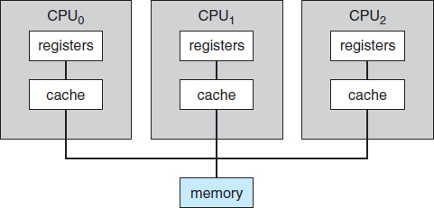

A simple piece of program, called Bootstrap Program will be executed which is stored in ROM
Bootstrap Program locate OS Kernel and load it into memory (RAM)
Kernel load System Daemons into memory to provide services along with Kernel itself
OS is fully booted, waiting for events to occur
Events OS is waiting for after booted, is usually signalled by an Interrupt
An interrupt is either from hardware or software
When the CPU is interrupted, it stops what it is doing and immediately transfers its execution to a fixed location, which contains starting address for service routine for this interrupt
Recent architecture would save interrupted instruction address along with CPU state (like register values) onto System Stack, when interrupt routine is serviced, interrupted instruction address will be loaded back into program counter and CPU state will also be recovered
Two types of processors: General-Purpose Processor and Special-Purpose Processor
General purpose processors execute a general instruction set, including instruction from user processors
Special purpose processors may come in the form of both device-specific processor and more general-purpose processor, all special-purpose processors run a limited set of instructions and do not run user processors
Multiple processors can be asymmetric and symmetric, asymmetric is Boss-Worker system, one boss and multiple workers, symmetric means all are peers, SMP (Symmetric Multiprocessing) is more common
Each CPU has its own set of registers and cache, but share RAM (main memory)
Multicore means having multiple computing cores on a single chip instead of multiple chips with one core on each chip